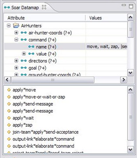

The dynamic datamap is generated by running an analysis of the productions in the project to create a depiction of the soar memory structure.
Datamap Table
Elements in the datamap table are attributes that are tested against states in productions.
- Click on an attribute to display the list of corresponding productions in which the attribute was tested or created.
- Ctrl-click multiple attributes to display the intersection of productions corresponding with those attributes.
- Each attribute has some combination of '+' and '?' descriptors associated with it. The '+' descriptor means that the attribute was created on the RHS, and the '?' descriptor means that the attribute was tested on the LHS.
- You can generate a production that monitors selected attributes by right-clicking on them and choosing Generate Monitor Production from the context menu. The generated production tests for the selected attributes on the LHS.
- The Values column in the table displays values that the attributes are tested against or created with.
Production List
The production list displays productions that correspond to selected attributes in the Soar Datamap.
- Select a production here to display it in the source viewer.
- Double-click a production to open the file it is located in and display it in an editor.
- Error and warning markers decorate the displayed elements according to the status of the model.